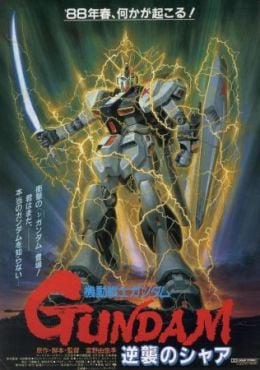
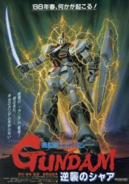

Gundam Universal Century


 



Universal Century
Comúnmente abreviado como U.C. (en español: Siglo Universal) es una de las líneas temporales de la metaserie Gundam. La línea Universal Century inicia después de que la humanidad empezara a poblar el espacio exterior, justo cuando la construcción del grupo de colonias espaciales en Side 1 fue completada. Ha sido la línea temporal primaria de Gundam, a pesar de que solo ocho de los 18 proyectos de animación o live-action lanzados desde 1995 han sido estrictamente puestos en esta línea temporal. La ciencia de Universal Century es práctica y hace uso de la ciencia real incluyendo los Puntos de Lagrange en el espacio, el Cilindro de O'Neill como ambiente vital, y la producción de energía a partir de Helio-3 (llamada Física Minovsky).